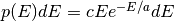

Settings¶
-
class
openmc.settings.SettingsFile¶ Settings file used for an OpenMC simulation. Corresponds directly to the settings.xml input file.
-
batches¶ int
Number of batches to simulate
-
generations_per_batch¶ int
Number of generations per batch
-
inactive¶ int
Number of inactive batches
-
particles¶ int
Number of particles per generation
-
keff_trigger¶ dict
Dictionary defining a trigger on eigenvalue. The dictionary must have two keys, ‘type’ and ‘threshold’. Acceptable values corresponding to type are ‘variance’, ‘std_dev’, and ‘rel_err’. The threshold value should be a float indicating the variance, standard deviation, or relative error used.
-
source_file¶ str
Path to a source file
-
output¶ dict
Dictionary indicating what files to output. Valid keys are ‘summary’, ‘cross_sections’, ‘tallies’, and ‘distribmats’. Values corresponding to each key should be given as a boolean value.
-
output_path¶ str
Path to write output to
-
verbosity¶ int
Verbosity during simulation between 1 and 10
-
statepoint_batches¶ Iterable of int
List of batches at which to write statepoint files
-
statepoint_interval¶ int
Number of batches after which a new statepoint file should be written
-
sourcepoint_batches¶ Iterable of int
List of batches at which to write source files
-
sourcepoint_interval¶ int
Number of batches after which a new source file should be written
-
sourcepoint_separate¶ bool
Indicate whether the souce should be written as part of the statepoint file or on its own
-
sourcepoint_write¶ bool
Indicate whether the source should be written at all
-
sourcepoint_overwrite¶ bool
Indicate whether to
-
confidence_intervals¶ bool
If True, uncertainties on tally results will be reported as the half-width of the 95% two-sided confidence interval. If False, uncertainties on tally results will be reported as the sample standard deviation.
-
cross_sections¶ str
Indicates the path to an XML cross section listing file (usually named cross_sections.xml). If it is not set, the
CROSS_SECTIONSenvironment variable will be used to find the path to the XML cross section listing.
-
energy_grid¶ str
Set the method used to search energy grids. Acceptable values are ‘nuclide’, ‘logarithm’, and ‘material-union’.
-
ptables¶ bool
Determine whether probability tables are used.
-
run_cmfd¶ bool
Indicate if coarse mesh finite difference acceleration is to be used
-
seed¶ int
Seed for the linear congruential pseudorandom number generator
-
survival_biasing¶ bool
Indicate whether survival biasing is to be used
-
weight¶ float
Weight cutoff below which particle undergo Russian roulette
-
weight_avg¶ float
Weight assigned to particles that are not killed after Russian roulette
-
entropy_dimension¶ tuple or list
Number of Shannon entropy mesh cells in the x, y, and z directions, respectively
-
entropy_lower_left¶ tuple or list
Coordinates of the lower-left point of the Shannon entropy mesh
-
entropy_upper_right¶ tuple or list
Coordinates of the upper-right point of the Shannon entropy mesh
-
trigger_active¶ bool
Indicate whether tally triggers are used
-
trigger_max_batches¶ int
Maximum number of batches simulated. If this is set, the number of batches specified via
batchesis interpreted as the minimum number of batches
-
trigger_batch_interval¶ int
Number of batches in between convergence checks
-
no_reduce¶ bool
Indicate that all user-defined and global tallies should not be reduced across processes in a parallel calculation.
-
threads¶ int
Number of OpenMP threads
-
trace¶ tuple or list
Show detailed information about a single particle, indicated by three integers: the batch number, generation number, and particle number
-
track¶ tuple or list
Specify particles for which track files should be written. Each particle is identified by a triplet with the batch number, generation number, and particle number.
-
ufs_dimension¶ tuple or list
Number of uniform fission site (UFS) mesh cells in the x, y, and z directions, respectively
-
ufs_lower_left¶ tuple or list
Coordinates of the lower-left point of the UFS mesh
-
ufs_upper_right¶ tuple or list
Coordinates of the upper-right point of the UFS mesh
-
export_to_xml()¶ Create a settings.xml file that can be used for a simulation.
-
set_source_angle(stype, params=[])¶ Defined the angular distribution of the external/starting source.
Parameters: - stype (str) – The type of angular distribution. Valid options are “isotropic” and
“monodirectional”. The angle of the particle emitted from a source
site is isotropic if the “isotropic” option is given. The angle of
the particle emitted from a source site is the direction specified
in
paramsif the “monodirectional” option is given. - params (Iterable of float) –
For an “isotropic” angular distribution,
paramsshould not be specified.For a “monodirectional” angular distribution,
paramsshould be given as three floats which specify the angular cosines with respect to each axis.
- stype (str) – The type of angular distribution. Valid options are “isotropic” and
“monodirectional”. The angle of the particle emitted from a source
site is isotropic if the “isotropic” option is given. The angle of
the particle emitted from a source site is the direction specified
in
-
set_source_energy(stype, params=[])¶ Defined the energy distribution of the external/starting source.
Parameters: - stype (str) – The type of energy distribution. Valid options are “monoenergetic”, “watt”, and “maxwell”. The “monoenergetic” option produces source sites at a single energy. The “watt” option produces source sites whose energy is sampled from a Watt fission spectrum. The “maxwell” option produce source sites whose energy is sampled from a Maxwell fission spectrum.
- params (Iterable of float) –
For a “monoenergetic” energy distribution,
paramsshould be given as the energy in MeV of the source sites.For a “watt” energy distribution,
paramsshould be given as two real numbers and that parameterize the
distribution
that parameterize the
distribution  .
.For a “maxwell” energy distribution,
paramsshould be given as one real number that parameterizes the distribution .
-
set_source_space(stype, params)¶ Defined the spatial bounds of the external/starting source.
Parameters: - stype (str) – The type of spatial distribution. Valid options are “box”, “fission”, and “point”. A “box” spatial distribution has coordinates sampled uniformly in a parallelepiped. A “fission” spatial distribution samples locations from a “box” distribution but only locations in fissionable materials are accepted. A “point” spatial distribution has coordinates specified by a triplet.
- params (Iterable of float) –
For a “box” or “fission” spatial distribution,
paramsshould be given as six real numbers, the first three of which specify the lower-left corner of a parallelepiped and the last three of which specify the upper-right corner. Source sites are sampled uniformly through that parallelepiped.For a “point” spatial distribution,
paramsshould be given as three real numbers which specify the (x,y,z) location of an isotropic point source
-